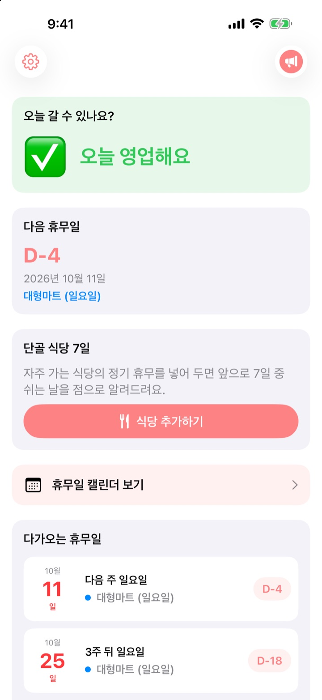
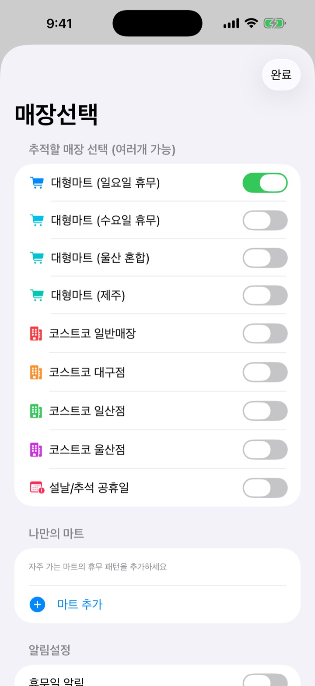
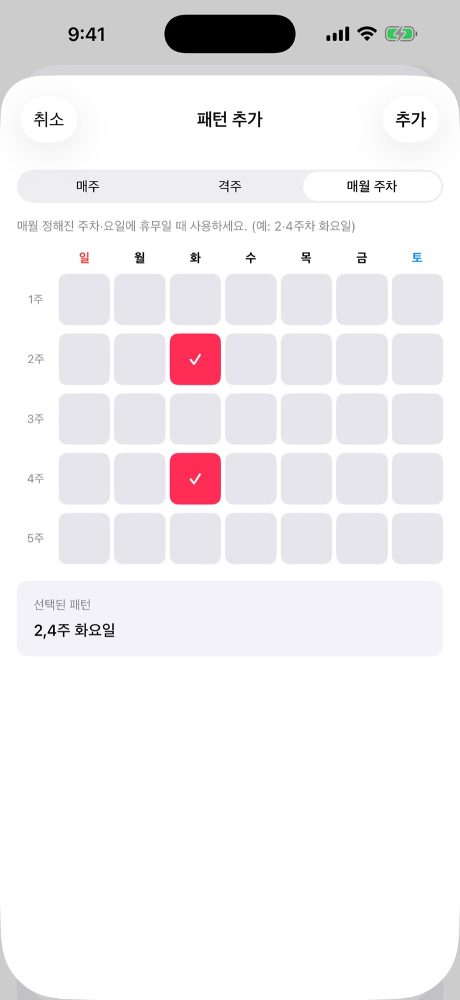
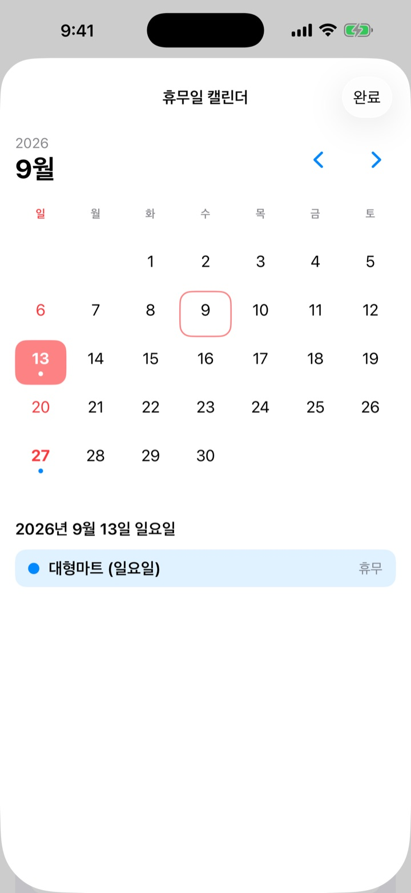
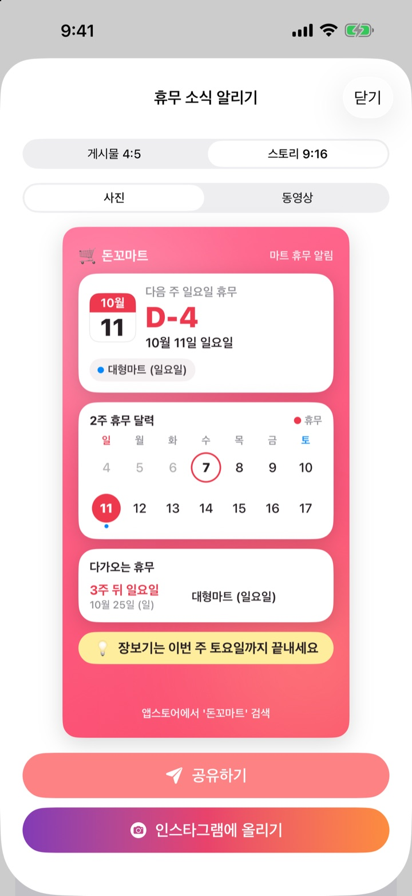

마트 가기 전에,
오늘 문을 여는지부터
고른 매장이 오늘 영업하는지가 앱을 열자마자 보여요. 쉬는 날이 다가오면 미리 알려 드려서 닫힌 마트 앞에서 발길을 돌릴 일이 없어요.
모든 기능이 무료예요. 계정도 광고도 없어요.

우리 동네 마트로 확인해 보세요
매장을 고르면 오늘 영업하는지, 다음 휴무일이 언제인지 바로 보여요. 앱과 같은 규칙으로 계산해요.
장바구니 들고 갔는데 문이 닫혀 있던 적 있나요?
대형마트 의무휴업일은 둘째·넷째 일요일인 곳도, 수요일인 곳도 있고 울산과 제주는 또 달라요. 코스트코는 지점마다 다르고요. 돈꼬마트는 내가 가는 매장의 규칙대로 쉬는 날을 계산해서 오늘 갈 수 있는지부터 알려 드려요.
지역마다 다른 휴무일도 맞게
일요일에 쉬는 곳, 수요일에 쉬는 곳은 물론 울산과 제주처럼 휴무 요일이 다른 지역도 고를 수 있어요. 코스트코는 일반 매장과 대구점, 일산점, 울산점을 따로 골라요.
설날과 추석 당일 휴무도 함께 표시돼요. 여러 매장을 한꺼번에 골라 둘 수 있어요.

우리 동네 마트와 단골 식당까지
목록에 없는 매장은 매주, 격주, 매월 몇째 주 무슨 요일에 쉬는지 정해서 나만의 마트로 등록하세요.
단골 식당은 네이버지도에서 공유한 링크를 붙여넣거나 식당 정보 화면 스크린샷을 고르면 정기 휴무를 알아서 채워 줘요. 사진 속 글자는 기기 안에서만 읽어요.

잊기 전에 알림과 위젯으로
휴무 1일, 2일, 3일, 7일 전 중에 골라 원하는 시각에 알림을 받아요. 휴무 전날에는 오늘이 장보기 좋은 날이라고 한 번 더 알려 드려요.
홈 화면과 잠금 화면 위젯으로 가까운 휴무일, 이번 주 일요일 영업 여부, 단골 식당의 7일 휴무를 바로 확인하세요. 달력에서는 한 달 치 휴무일을 한눈에 봐요.

가족 단톡방에 한 장으로
휴무 소식을 2주 달력과 장보기 팁이 담긴 카드로 만들어 보내세요. 인스타그램 게시물과 스토리 규격, 짧은 동영상으로도 만들 수 있어요.

시작은 세 단계면 돼요
- 1
매장을 골라요
내가 가는 마트와 지역을 켜 두세요. 여러 곳을 골라도 돼요.
- 2
알림을 켜요
며칠 전, 몇 시에 알려 줄지 정하세요.
- 3
위젯을 놓아요
홈 화면이나 잠금 화면에서 앱을 열지 않고도 확인해요.
매장별 휴무 규칙
- 대형마트 (일요일 휴무)
- 둘째·넷째 일요일 · 전국 대부분 지역
- 대형마트 (수요일 휴무)
- 둘째·넷째 수요일 · 경기 일부, 청주
- 대형마트 (울산)
- 둘째 수요일, 넷째 일요일
- 대형마트 (제주)
- 둘째 금요일, 넷째 토요일
- 코스트코 일반 매장
- 둘째·넷째 일요일
- 코스트코 대구점
- 둘째·넷째 월요일 · 대구, 대구혁신점
- 코스트코 일산점
- 둘째·넷째 수요일
- 코스트코 울산점
- 둘째 수요일, 넷째 일요일
- 설날·추석
- 당일 휴무
의무휴업일은 지자체 조례에 따라 바뀔 수 있어요. 실제와 다르면 아래 메일로 알려 주세요.
자주 묻는 질문
휴무일 정보가 실제와 달라요.
대형마트 의무휴업일은 지자체 조례에 따라 지역마다 달라요. 설정에서 지역에 맞는 매장(일요일 휴무, 수요일 휴무, 울산, 제주 등)을 골랐는지 확인해 주세요. 그래도 다르다면 마트 이름과 지역을 메일로 알려 주시면 확인 후 반영할게요.
목록에 없는 마트는 어떻게 하나요?
나만의 마트로 직접 추가할 수 있어요. 매주, 격주, 또는 둘째·넷째 일요일처럼 몇째 주 무슨 요일에 쉬는지 정해서 저장하세요.
단골 식당 휴무일이 제대로 채워지지 않아요.
네이버지도 링크로 가져올 때는 식당의 플레이스 페이지에 정기 휴무가 적혀 있어야 해요. 스크린샷으로 가져올 때는 "매주 화요일 휴무"처럼 휴무 문구가 화면에 보이도록 찍어 주세요. 채워진 내용은 저장하기 전에 직접 고칠 수 있어요.
알림이 오지 않아요.
iPhone의 설정 > 알림 > 돈꼬마트에서 알림이 허용되어 있는지, 앱 안에서 휴무일 알림이 켜져 있는지 확인해 주세요.
위젯이 업데이트되지 않아요.
앱을 한 번 열면 위젯 정보가 새로 고쳐져요. 그래도 그대로라면 위젯을 지웠다가 다시 추가해 보세요.
후원은 무엇인가요?
돈꼬마트의 모든 기능은 무료예요. 커피, 케이크, 식사 후원은 개발자를 응원하는 팁이고, 후원하면 감사 인사와 함께 누적 횟수가 적힌 후원자 배지가 표시돼요.
결제(환불 등)는 어디에 문의하나요?
인앱 결제는 Apple이 처리하므로 환불은 Apple의 문제 신고 페이지(reportaproblem.apple.com)에서 요청할 수 있어요. 그 밖의 궁금한 점은 메일로 보내 주세요.
개인정보는 어떻게 다루나요?
계정이 없고 광고나 추적 도구를 쓰지 않아요. 스크린샷 속 글자도 기기 안에서만 읽어요. 자세한 내용은 아래 개인정보처리방침을 확인해 주세요.
궁금한 점이나 의견은 hyunho.lee.1993@gmail.com로 보내 주세요. 보통 1~2일 안에 답변드려요.